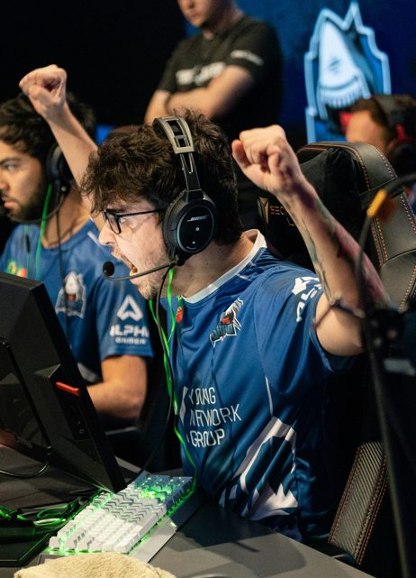
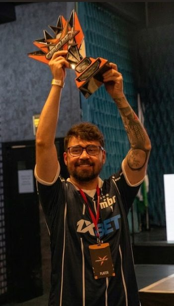

Ciência da Computação
Me formei pela UNIFIEO em dezembro de 2015 e fui trabalhar com servidores web e inovação na área de tecnologia.
Analista de Infraestrutura Cloud na empresa Darede, com foco em AWS, Observabilidade e IA. Ex-atleta profissional e treinador de Counter-Strike.
Oito anos no cenário competitivo de Counter-Strike, como jogador e depois como treinador.
Me formei pela UNIFIEO em dezembro de 2015 e fui trabalhar com servidores web e inovação na área de tecnologia.
Em dezembro de 2017 recebi uma proposta para virar jogador profissional de Counter-Strike, o jogo que fez parte da minha infância e da minha adolescência.
Eu tinha 23 anos e era Analista Pleno. Decidi arriscar e cair de cabeça. Nunca tinha andado de avião, e de repente estava viajando o mundo num ritmo insano.

Joguei os maiores campeonatos da modalidade e venci diversos torneios nacionais. No caminho, morei em três países e passei por mais onze.
14 países
Depois de seis anos como jogador, decidi me tornar treinador. O foco passou a ser outro: estruturação do time, análise de adversários e gestão de ambiente e de performance.
Treinei a equipe feminina da FURIA, e juntos conquistamos o vice-campeonato mundial disputado na Suécia. Depois, treinei a equipe masculina do MIBR, conquistando diversos campeonatos nacionais e disputando dois Majors, nos Estados Unidos e na Hungria.

Obrigado por visitar meu site e ler até aqui!